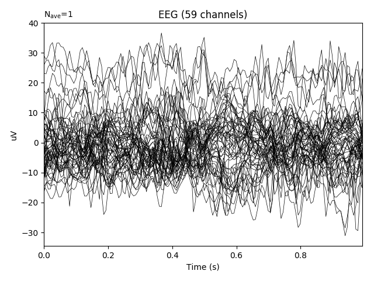

Note
Click here to download the full example code
Plot real-time epoch data with LSL client¶
This example demonstrates how to use the LSL client to plot real-time collection of event data from an LSL stream. For the purposes of demo, a mock LSL stream is constructed. You can replace this with the stream of your choice by changing the host id to the desired stream.
Out:
Opening raw data file /home/circleci/mne_data/MNE-sample-data/MEG/sample/sample_audvis_filt-0-40_raw.fif...
Read a total of 4 projection items:
PCA-v1 (1 x 102) idle
PCA-v2 (1 x 102) idle
PCA-v3 (1 x 102) idle
Average EEG reference (1 x 60) idle
Range : 6450 ... 48149 = 42.956 ... 320.665 secs
Ready.
Current compensation grade : 0
Reading 0 ... 4505 = 0.000 ... 30.003 secs...
now sending data...
Client: Waiting for server to start
Client: Connected
Got epoch 1/5
1 matching events found
No baseline correction applied
Not setting metadata
Created an SSP operator (subspace dimension = 1)
4 projection items activated
0 bad epochs dropped
Got epoch 2/5
1 matching events found
No baseline correction applied
Not setting metadata
Created an SSP operator (subspace dimension = 1)
4 projection items activated
0 bad epochs dropped
Got epoch 3/5
1 matching events found
No baseline correction applied
Not setting metadata
Created an SSP operator (subspace dimension = 1)
4 projection items activated
0 bad epochs dropped
Got epoch 4/5
1 matching events found
No baseline correction applied
Not setting metadata
Created an SSP operator (subspace dimension = 1)
4 projection items activated
0 bad epochs dropped
Got epoch 5/5
1 matching events found
No baseline correction applied
Not setting metadata
Created an SSP operator (subspace dimension = 1)
4 projection items activated
0 bad epochs dropped
Stopping stream...
Streams closed
# Author: Teon Brooks <teon.brooks@gmail.com>
#
# License: BSD (3-clause)
import matplotlib.pyplot as plt
from mne.realtime import LSLClient, MockLSLStream
from mne.datasets import sample
from mne.io import read_raw_fif
print(__doc__)
# this is the host id that identifies your stream on LSL
host = 'mne_stream'
# this is the max wait time in seconds until client connection
wait_max = 5
# Load a file to stream raw data
data_path = sample.data_path()
raw_fname = data_path + '/MEG/sample/sample_audvis_filt-0-40_raw.fif'
raw = read_raw_fif(raw_fname).crop(0, 30).load_data().pick('eeg')
# For this example, let's use the mock LSL stream.
_, ax = plt.subplots(1)
n_epochs = 5
with MockLSLStream(host, raw, 'eeg'):
with LSLClient(info=raw.info, host=host, wait_max=wait_max) as client:
client_info = client.get_measurement_info()
sfreq = int(client_info['sfreq'])
# let's observe ten seconds of data
for ii in range(n_epochs):
print('Got epoch %d/%d' % (ii + 1, n_epochs))
plt.cla()
epoch = client.get_data_as_epoch(n_samples=sfreq)
epoch.average().plot(axes=ax)
plt.pause(1.)
plt.draw()
print('Streams closed')
Total running time of the script: ( 0 minutes 9.758 seconds)
Estimated memory usage: 9 MB